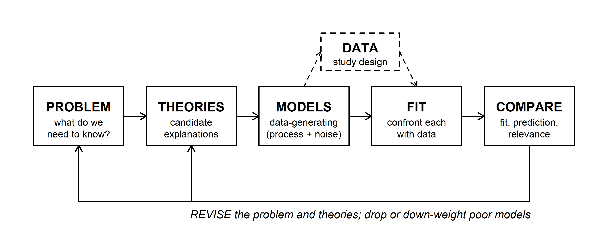
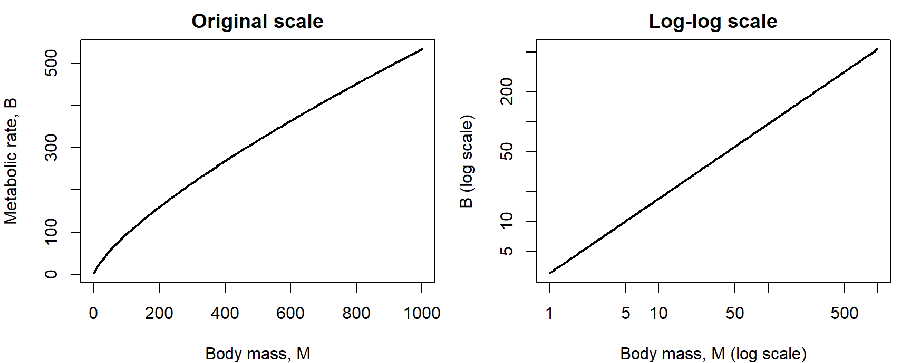
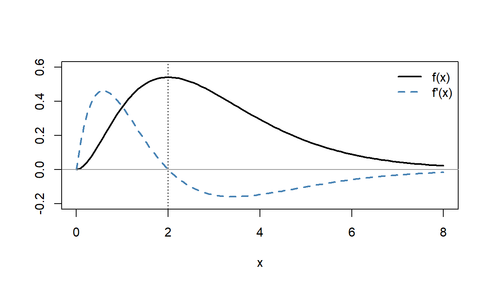
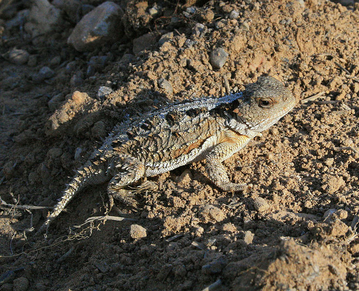
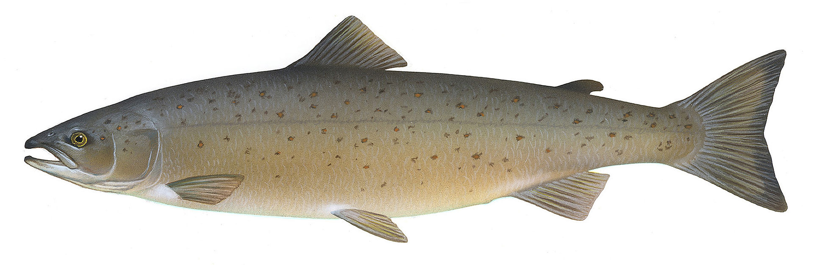
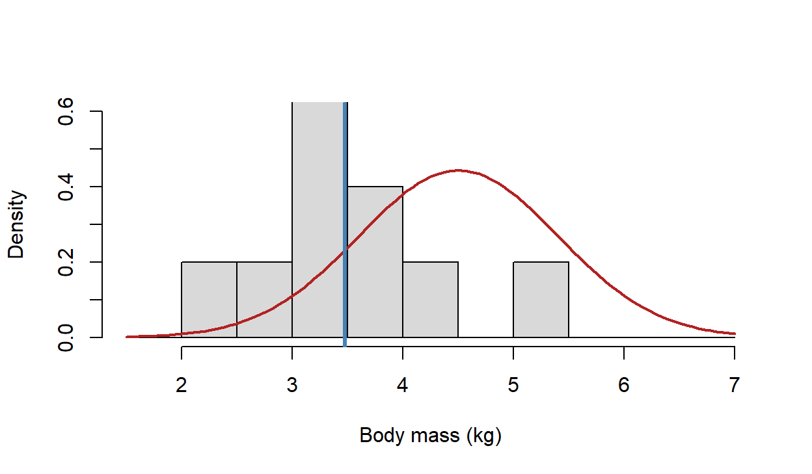
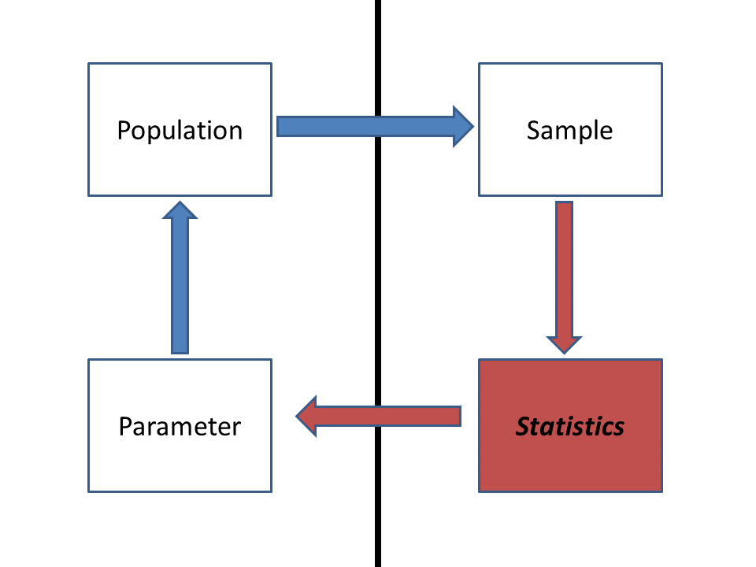
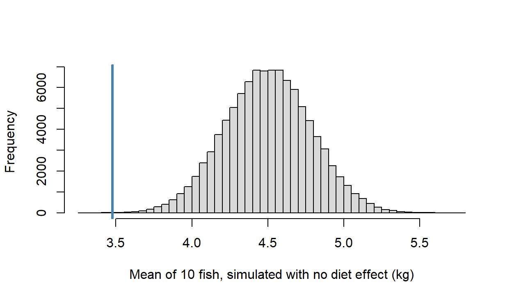
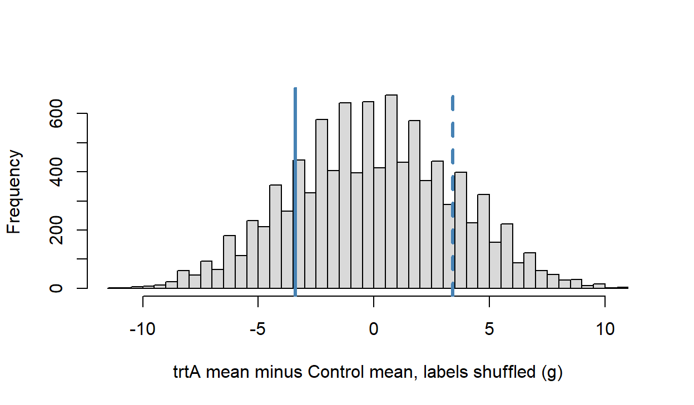
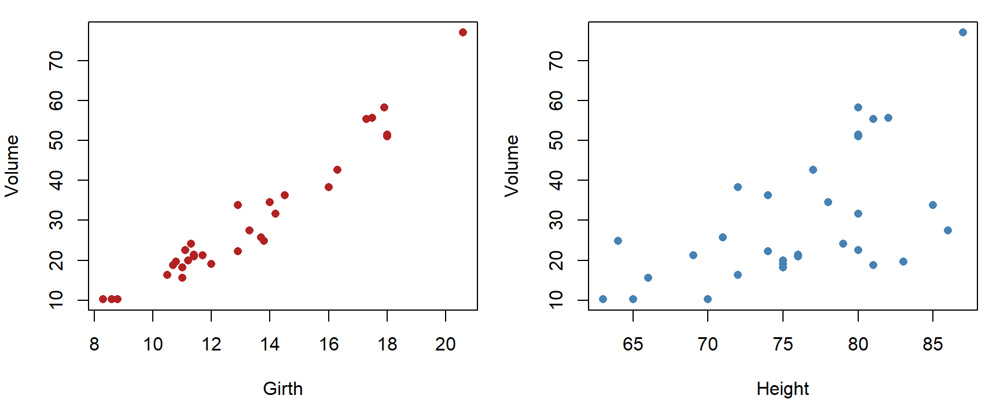

Week 1: Course Introduction and Algorithms for Inference
NRES 746
Aug. 24-26, 2026
R code from this page is also in the companion script. Only base R is needed.
This material follows Bolker, Ecological Models and Data in R, chapter 1 (pp. 1-35), especially analytical vs. computational models (1.3.2, p. 9), and appendix A on algebra and calculus (A.1-A.4, pp. 480-482).
What this course is about
This course is about learning to build statistical models from the ground up, from basic principles, so they fit your question instead of reshaping your question to fit a standard test. That means writing down how you think the data were generated, fitting that model, and checking it against rivals. This part gives the map for the semester, describes how the course runs, and works through the self-diagnostic warm-up.
1. Big picture

Most statistics courses teach a menu of tests: pick the one whose assumptions match your data, run it, report a p-value. That works until your data break the assumptions or your question isn't on the menu. Here we work from the other end. Every analysis starts with a problem (often a management or conservation question) and a set of theories that could explain the pattern. Each theory becomes a model with two parts: a deterministic function for the expected response and a probability distribution for the scatter around it. We fit each model to data, compare the fits, and revise the problem and the theories based on what we learn.
The semester follows this loop. Early weeks build the parts of a model (deterministic functions, probability, simulation); the middle of the semester covers fitting (likelihood, optimization, Bayesian inference and MCMC); later weeks cover comparing models and models for messier data (hierarchical, correlated, and nonlinear structure). Along the way, think of this as a course about playing: with data, with models, and with probability. Simulating data from a model you wrote yourself, and seeing whether you can get its parameters back, is one of the best ways to learn what a model can and can't tell you.
2. How the course runs
- Lectures follow a web page like this one, one per week. Each lecture opens with a WOD ("workout of the day"), a short warm-up problem you work alone and then compare with a neighbor. WODs aren't graded for correctness, but to get participation credit you need to at least try each question. If you're completely lost, use the space to explain what confuses you and any other thoughts that come up. Struggle is a good thing, but write it down.
- Labs (2 hours 45 minutes, and we use all of it) are split into Acts. In each Act you work alone first, then compare and revise with your group. Getting something wrong on the first try is expected; the group discussion is where most of the learning happens. Lab handouts mix closed-laptop and open-laptop work.
- What to bring: a notebook and pen or pencil to lectures; a laptop as well (plus the notebook and pen) to labs.
- Final projects use your own data (or data you find). Everyone pitches a project, and groups form around the strongest pitches.
- Textbook: Ben Bolker, Ecological Models and Data in R. It's getting older (we'll point out where it shows its age), but it's still the textbook most aligned with this course's philosophy. Reading the relevant chapters before class is your main homework: you'll get much more out of class if you read (and reread) them first and note what confuses you. Be warned that the book won't all click together until chapter 6 (likelihood). Other readings are on WebCampus.
- R: install R and RStudio. We won't spend much time teaching R, but you should be able to load and plot data, run an analysis, and write a simple loop or function. The links page has references, and below are the R skills worth practicing.
- AI tools: use them freely outside class. In class, keep them closed unless a handout says otherwise. Coding questions say whether AI is recommended, and you note how you used it.
- Questions: if something doesn't make sense, stop the lecture and ask. That's a problem with the explanation, not with you.
- Stats Chats is an informal weekly gathering where you can bring any quantitative question: statistics, experimental design, model simulation and analysis, debugging R code. Come whenever you can; the more people join, the better the discussions. In fall 2026 it meets Tuesdays 12-1 pm in the Lilli Brant reading room of the DeLaMare Science and Engineering Library (third floor). The Stats Chats guide lists each week's topics, and you can join the mailing list for reminders and to suggest topics.
- Missing class: time together in class is precious, so keep absences to a minimum, but we can be flexible about field work and other conflicts. Let the instructor know in advance, and send an email even if you've already mentioned it in person, so there's a written record. Get notes from a classmate.
- A new structure: the course has been overhauled for AI tools, which are changing quantitative modeling and statistical analysis. The core content and philosophy are largely unchanged, but the structure is new. If something isn't working for you, say so, and it will be adjusted. The WOD and lab handouts are developed with AI assistance: the instructor writes a detailed description of the material and examples, an AI assistant (Claude) drafts the handout, the instructor works through the problems, rewording and adding clarifications, and the AI does a final formatting pass. This makes it easier to try new things in class and to change direction when something isn't working.
What to expect. Come to class with an open mind, prepared to think, struggle a little, and engage with challenging material. You may know the Dunning-Kruger effect: people just starting a topic often feel more expert than they are, then lose confidence as they see how much there is to learn, and only then begin the long (and rewarding) climb toward real expertise. This course aims to carry you through a good part of that path: past the false peak, through the dip (you may stay there a while), and onto the path of lifelong learning where real scientific discoveries happen.
3. WOD: a self-diagnostic
The first WOD was a self-diagnostic of the math, statistics, probability, and R that the course builds on. The goal isn't getting the right answers; it's for you to know which skills you might want to dust off. For many people that's calculus. This isn't a math class, but a little calculus helps a lot when working with functions and probability distributions, and 3Blue1Brown's Essence of Calculus videos are a good place to start. Here are the answers, with a little R where it helps.
Logs and exponents. \(2^x = 32\) gives \(x = 5\). For growth \(N_t = N_0 e^{rt}\) with \(N_0 = 100\) and \(N_8 = 550\), divide and take natural logs: \(r = \ln(550/100)/8\).
log(550 / 100) / 8## [1] 0.2130935Derivatives and integrals. \(f(x) = (4x^2 - 3x)^5\) is a function inside a function, so the chain rule applies: the outer derivative times the inner one,
\[f'(x) = 5(4x^2 - 3x)^4 (8x - 3).\]
At \(x = 1\) the inner function is 1, so \(f'(1) = 5 \cdot 1 \cdot 5 = 25\): the curve is rising there, about 25 units of \(f\) per unit of \(x\). R's D() gives the same derivative:
fprime <- D(quote((4 * x^2 - 3 * x)^5), "x")
fprime## 5 * ((4 * (2 * x) - 3) * (4 * x^2 - 3 * x)^4)eval(fprime, list(x = 1))## [1] 25For a recruitment rate \(r(t) = 4t\), an antiderivative is \(R(t) = 2t^2\), so the total recruits from \(t = 0\) to 5 is \(R(5) - R(0) = 50\). integrate() does it numerically:
integrate(function(t) 4 * t, lower = 0, upper = 5)## 50 with absolute error < 5.6e-13Probability. \(P(A \text{ or } B) = P(A) + P(B) - P(A \text{ and } B) = 0.4 + 0.5 - 0.2 = 0.7\) (subtract the overlap, or it's counted twice). For two children with at least one girl, the equally likely families are GG, GB, BG, and BB. The condition rules out BB, leaving three, so \(P(\text{both girls}) = 1/3\), not 1/2. A quick simulation agrees:
set.seed(1)
kids <- matrix(sample(c("G", "B"), 2e5, replace = TRUE), ncol = 2)
at_least_one <- kids[, 1] == "G" | kids[, 2] == "G"
both <- kids[, 1] == "G" & kids[, 2] == "G"
mean(both[at_least_one])## [1] 0.3334355Confidence intervals and p-values. Both answers were (b). A 95% confidence interval comes from a procedure that captures the true mean in about 95% of repeated samples; any one interval either contains it or doesn't. A p-value is the probability of a result at least as extreme as the one observed, computed assuming the null hypothesis is true. It is not the probability that the null is true.
R. Three snippets, one bug each:
site_data <- matrix(c(12, 7, 19, 4, 45, 23, 61, 15), nrow = 4, ncol = 2)
site_data[2] # the 2nd element, counting down the columns## [1] 7site_data[, 2] # the whole 2nd column## [1] 45 23 61 15values <- c(10, 20, 30, 40)
doubled <- numeric(length(values))
for (i in seq_along(values)) { # loop over positions 1 to 4, not values 10 to 40
doubled[i] <- values[i] * 2
}
doubled## [1] 20 40 60 80get_range <- function(x) { # braces keep all three lines inside the function
max_val <- max(x)
min_val <- min(x)
max_val - min_val
}
get_range(values)## [1] 30Looping over values itself would set i to 10, 20, 30, and 40, and R would quietly grow doubled to 40 elements, mostly NA. Without the braces, only max_val <- max(x) belongs to the function.
Discussion
- A study reports a 95% confidence interval of 0.42 to 0.61 for annual nest survival. A manager reads it as "there's a 95% chance true survival is between 0.42 and 0.61." Is that wrong, and would the distinction change any decision the manager makes?
- Pick a question from your own research. Write the problem first (what decision or understanding is at stake?), then two theories that could explain the pattern you expect. Would the two theories predict different data?
Math tools for Lab 1
Lab 1 uses rules for exponents and logarithms, derivatives built with the product and chain rules, and the idea that the area under a rate curve is a total. These are reminders of material from calculus, worked on examples that differ from the lab's. The reasoning matters more than memorizing formulas: each rule here follows from a picture or from a rule before it.
1. Big picture
Ecological models are built from a small set of mathematical pieces. Exponentials describe growth and decay; logarithms undo them and turn multiplication into addition; derivatives say where a curve rises, falls, or peaks; integrals add up a rate into a total. Bolker's appendix A (pp. 480-482) summarizes all of these.
2. Exponents and logarithms
The exponent rules:
\[x^a x^b = x^{a+b} \qquad \frac{x^a}{x^b} = x^{a-b} \qquad (x^a)^b = x^{ab} \qquad x^{-a} = \frac{1}{x^a} \qquad x^0 = 1.\]
The last one follows from the second: \(x^a/x^a = x^{a-a} = x^0\), and anything divided by itself is 1.
A logarithm answers the question "what power?" \(\log_b(x)\) is the exponent you raise \(b\) to in order to get \(x\): \(\log_{10}(1000) = 3\) because \(10^3 = 1000\). Every log rule is an exponent rule read backwards:
\[\log(xy) = \log x + \log y \qquad \log(x/y) = \log x - \log y \qquad \log(x^k) = k\log x \qquad \log(1) = 0.\]
Some examples:
\[\log_{10}(2) + \log_{10}(50) = \log_{10}(100) = 2 \qquad \log_{10}(500) - \log_{10}(5) = \log_{10}(100) = 2 \qquad \log_{10}(3^4) = 4\log_{10}(3).\]
log10(2) + log10(50)## [1] 2log10(500) - log10(5)## [1] 2c(log10(3^4), 4 * log10(3))## [1] 1.908485 1.908485In R, log() is the natural log (base \(e\)) and log10() is base 10. For a power of ten, \(\log_{10}\) counts the zeros; for any other number it gives the order of magnitude: \(\log_{10}(7{,}000{,}000) \approx 6.85\), so the number is in the millions. That is why ecologists plot body sizes, population sizes, and likelihoods on log scales: equal distances on a log axis are equal multiplicative factors.
Turning a curve into a line. Logs can turn a curved relationship into a straight one. Metabolic rate \(B\) often scales with body mass \(M\) as a power law, \(B = aM^b\) with \(b\) near 0.75. Take \(\log_{10}\) of both sides:
\[\log_{10} B = \log_{10} a + b \log_{10} M.\]
On a log-log plot, the power law is a line with slope \(b\) and intercept \(\log_{10} a\).
mass <- c(1, 10, 100, 1000)
rate <- 3 * mass^0.75
data.frame(mass, rate = round(rate, 1), log10_rate = round(log10(rate), 3))## mass rate log10_rate
## 1 1 3.0 0.477
## 2 10 16.9 1.227
## 3 100 94.9 1.977
## 4 1000 533.5 2.727par(mfrow = c(1, 2), mar = c(4, 4, 2, 1))
curve(3 * x^0.75, from = 1, to = 1000, lwd = 2, xlab = "Body mass, M",
ylab = "Metabolic rate, B", main = "Original scale")
curve(3 * x^0.75, from = 1, to = 1000, lwd = 2, log = "xy",
xlab = "Body mass, M (log scale)", ylab = "B (log scale)",
main = "Log-log scale")
Question: In the table, how much does \(\log_{10} B\) rise for each tenfold increase in mass? What would a slope of exactly 1 on the log-log plot mean biologically?
3. Derivatives: the power, product, and chain rules
A derivative is a rate of change: how much a function's output changes per unit change in its input, in the limit of a very small change.
Power rule: \(\dfrac{d}{dx}x^n = n x^{n-1}\). Picture \(x^2\) as the area of a square with side \(x\). Grow the side by a small amount \(dx\). The area gains two strips of area \(x \, dx\) and a small corner of area \(dx^2\). As \(dx\) shrinks, the corner shrinks faster than the strips, so the change in area per unit change in side approaches \(2x\).
Product rule: \(\dfrac{d}{dx}(uv) = u'v + uv'\). The same picture with a rectangle whose width \(u\) and height \(v\) grow at different rates. The new area is the old one plus a strip \(v\,du\) on the side, a strip \(u\,dv\) on top, and a corner \(du\,dv\) that vanishes in the limit. The power rule is the special case \(u = v = x\).
Question: In square mode, set \(x = 3\) and slide \(dx\) from 1.5 down to 0.1. What happens to the corner's share of the change in area? Why can we drop the corner when finding the derivative, but not when computing the exact new area?
Chain rule: \(\dfrac{d}{dx}f(g(x)) = f'(g(x))\, g'(x)\). Rates multiply through a composition: if you bike 3 times as fast as you walk and walk 2 times as fast as you crawl, you bike 6 times as fast as you crawl. For exponentials, the outer function is its own derivative, so
\[\frac{d}{dx} e^{g(x)} = g'(x)\, e^{g(x)}.\]
Putting them together. Take \(f(x) = x^2 e^{-x}\), a curve that rises from zero and then decays. It is a product, \(u = x^2\) and \(v = e^{-x}\), with \(u' = 2x\) and \(v' = -e^{-x}\) (chain rule, inner derivative \(-1\)):
\[f'(x) = 2x e^{-x} - x^2 e^{-x} = x(2 - x)e^{-x}.\]
The derivative is zero where any factor is zero. \(e^{-x}\) is never zero, so the critical points are \(x = 0\) and \(x = 2\). D() and optimize() agree:
D(quote(x^2 * exp(-x)), "x")## 2 * x * exp(-x) - x^2 * exp(-x)f <- function(x) x^2 * exp(-x)
optimize(f, interval = c(0, 10), maximum = TRUE)$maximum## [1] 1.999999curve(f(x), from = 0, to = 8, lwd = 2, ylim = c(-0.2, 0.6),
xlab = "x", ylab = "")
curve(x * (2 - x) * exp(-x), add = TRUE, lty = 2, lwd = 2, col = "steelblue")
abline(h = 0, col = "grey60")
abline(v = 2, lty = 3)
legend("topright", c("f(x)", "f'(x)"), lty = 1:2, lwd = 2,
col = c("black", "steelblue"), bty = "n")
The derivative crosses zero where \(f\) peaks.
The quotient rule comes free. Write \(u/v = u \cdot v^{-1}\). The product rule, with the chain rule for \(v^{-1}\) (derivative \(-v^{-2}v'\)), gives
\[\frac{d}{dx}\left(\frac{u}{v}\right) = \frac{u'}{v} - \frac{uv'}{v^2} = \frac{u'v - uv'}{v^2}.\]
Many saturating functions in ecology are ratios, so this is worth having, but it is not a new idea.
4. Adding up a rate: a first look at integration
A derivative turns a total into a rate. An integral turns a rate into a total. If a predator captures prey at a constant 2 per day, it captures \(2 \times 5 = 10\) in five days: the area of a rectangle 5 days wide and 2 per day tall. When the rate changes over time, the total is still the area under the rate curve. For a rate that climbs steadily from 0 to 4 per day over five days, the area is a triangle, \(\frac{1}{2}(5)(4) = 10\).
For curves that aren't straight lines, approximate the area with thin rectangles and add them up (a Riemann sum). Thinner rectangles give a better approximation:
Question: Choose the ramp and the left-edge rule. Is the sum too big or too small, and why? What changes with the right-edge rule? Why does the midpoint rule get the ramp right with any number of rectangles, but not the rise-and-fall curve?
The fundamental theorem of calculus says you don't always need the rectangles. If \(F\) is an antiderivative of \(f\) (so \(F' = f\)), then
\[\int_a^b f(t)\,dt = F(b) - F(a).\]
For the ramp, \(f(t) = 0.8t\). Running the power rule backwards (raise the power by one, divide by the new power) gives \(F(t) = 0.4t^2\), so the total is \(F(5) - F(0) = 0.4(25) = 10\), matching the triangle.
integrate(function(t) 0.8 * t, lower = 0, upper = 5)## 10 with absolute error < 1.1e-13F <- function(t) 0.4 * t^2
F(5) - F(0)## [1] 10Integrals come back when we work with probability densities, where the area under a curve is a probability.
Algorithms for inference
A statistical test answers a question like "could this pattern have come from chance alone?" Some tests have a formula that gives the answer directly. When no formula exists, or its assumptions don't fit, you can get the answer by simulation: write down the chance process, run it many times, and see how often it produces a pattern as extreme as yours. This part works two examples, a z-test solved both ways and a permutation test that has no formula at all.
1. Big picture

The simplest comparison in the workflow is between the data and a null model, a model in which the effect you care about is absent. Bolker (1.3.2, p. 9) separates analytical models, solved with algebra and calculus, from computational models, which are programs you run to see what they do. Both kinds can answer the same question. An analytical answer is exact and instant but exists only for problems simple enough to solve on paper. A computational answer needs only an understanding of how the data could have arisen, so it works for problems no formula covers.
2. WOD: pseudocoding a permutation test
The WOD (handout) gave the body mass (g) of 10 pygmy short-horned lizards from a cheatgrass-removal area (trtA) and 10 from an untreated area (Control):

lizards <- data.frame(
mass = c(175, 168, 168, 190, 156, 181, 182, 175, 174, 179,
185, 169, 173, 173, 188, 186, 175, 174, 179, 180),
group = rep(c("trtA", "Control"), each = 10)
)
group_means <- tapply(lizards$mass, lizards$group, mean)
group_means## Control trtA
## 178.2 174.8observed_dif <- group_means[["trtA"]] - group_means[["Control"]]
observed_dif## [1] -3.4The test statistic is the difference in group means, -3.4 g. The alternative is two-tailed: the question was whether mass differs between the groups, with no direction predicted in advance, so a difference of \(+3.4\) would count as much evidence as \(-3.4\).
The algorithm. If the treatment has no effect, the labels "trtA" and "Control" are arbitrary: any lizard could have carried either label. So:
- Compute the observed difference in means.
- Many times: shuffle the 20 labels at random, recompute the difference in means for the shuffled groups, and store it.
- The stored differences show what the statistic looks like when the labels mean nothing.
- The p-value is the fraction of stored differences at least as far from zero as the observed one.
Section 4 turns this into R.
3. Two routes to a z-test

Farm-raised Atlantic salmon on a conventional diet weigh about Normal(4.5, 0.9) kg after a year. Ten fish raised on a new plant-based diet were weighed. Do fish on the new diet weigh less? (A one-tailed question: only lower mass counts as evidence.)
pop_mean <- 4.5
pop_sd <- 0.9
salmon <- c(3.14, 3.27, 2.56, 3.77, 3.34, 4.32, 3.84, 2.19, 5.24, 3.09)
n <- length(salmon)
sample_mean <- mean(salmon)
sample_mean## [1] 3.476hist(salmon, freq = FALSE, breaks = seq(1.5, 7, by = 0.5), col = "grey85",
xlim = c(1.5, 7), ylim = c(0, 0.6), main = "",
xlab = "Body mass (kg)")
curve(dnorm(x, pop_mean, pop_sd), add = TRUE, lwd = 2, col = "firebrick")
abline(v = sample_mean, lwd = 3, col = "steelblue")
The red curve is the conventional-diet population; the histogram is the new-diet sample, with its mean in blue. The question is about the sample mean: how unusual is a mean of 3.476 kg for 10 fish drawn from the red population?

We want to learn about a population, but we only see a sample. A statistic computed from a sample (here, the mean) varies from sample to sample. That sampling variability is what a test has to account for.
Route 1: analytical. The means of samples of size \(n\) from a normal population are themselves normal, with the same mean and a standard error of \(\sigma/\sqrt{n}\). That gives the p-value in one line:
pop_se <- pop_sd / sqrt(n)
z <- (sample_mean - pop_mean) / pop_se
p_analytical <- pnorm(sample_mean, mean = pop_mean, sd = pop_se)
c(z = z, p = p_analytical)## z p
## -3.5979692489 0.0001603558This is the textbook z-test (the BSDA package's z.test() does the same thing). It works because the problem was simple enough to solve on paper: a known population standard deviation and a normal population.
Route 2: computational. Suppose we had never heard of a standard error. We still know the story: if the new diet does nothing, the 10 fish are a random sample from the conventional population. So draw such samples, many times, and see how often their mean is as low as ours.
set.seed(746)
n_sims <- 100000
null_means <- numeric(n_sims)
for (i in seq_len(n_sims)) {
fake_sample <- rnorm(n, mean = pop_mean, sd = pop_sd)
null_means[i] <- mean(fake_sample)
}
p_simulated <- mean(null_means <= sample_mean)
p_simulated## [1] 0.00021hist(null_means, breaks = 60, col = "grey85", main = "",
xlab = "Mean of 10 fish, simulated with no diet effect (kg)",
xlim = range(c(null_means, sample_mean)))
abline(v = sample_mean, lwd = 3, col = "steelblue")
Out of 1e+05 simulated samples, 21 had a mean at or below 3.476 kg, for a p-value of about 2.110^{-4}. The formula said 1.610^{-4}. The two agree to within simulation noise, and the simulation never used the standard-error formula. The spread of the simulated means is 0.286, close to \(\sigma/\sqrt{n} = 0.285\): the loop rediscovered the standard error on its own.
The tradeoff: the formula is exact and instant but needs assumptions that let someone derive it; the loop is approximate and slower but needs only a story you can simulate.
4. Shuffling labels: a permutation test
The lizard data have no known population to simulate from, and we don't want to assume normality. The permutation test from the WOD builds the null distribution from the data themselves, by shuffling the labels:
set.seed(746)
reps <- 10000
null_difs <- numeric(reps)
for (i in seq_len(reps)) {
shuffled <- sample(lizards$group)
null_difs[i] <- mean(lizards$mass[shuffled == "trtA"]) -
mean(lizards$mass[shuffled == "Control"])
}
p_perm <- mean(abs(null_difs) >= abs(observed_dif))
p_perm## [1] 0.3699hist(null_difs, breaks = 40, col = "grey85", main = "",
xlab = "trtA mean minus Control mean, labels shuffled (g)")
abline(v = c(observed_dif, -observed_dif), lwd = 3, col = "steelblue",
lty = c(1, 2))
About 37% of shuffles give a difference at least as large as the observed 3.4 g, in either direction. A difference this size is common when the labels mean nothing, so these data give no real evidence of a treatment effect.
Compare the two loops. Both compute a statistic, then repeat a random step many times, recompute, and store, then ask how often the stored values are as extreme as the observed one. Only the random step differs: the salmon loop draws new data from an assumed population, while the permutation loop reshuffles the data we have.
Question: For the salmon, add 1,000 replicates a few times. Many runs of 1,000 contain no simulated mean as low as 3.476. What p-value should you report from such a run? How many replicates would you need before you expect to see a few?
Packaging the loop. Once an algorithm works, wrap it in a function so it runs on any data set with two groups:
permutation_test <- function(value, group, reps = 10000) {
labels <- unique(group)
dif <- function(g) mean(value[g == labels[1]]) - mean(value[g == labels[2]])
observed <- dif(group)
null_difs <- numeric(reps)
for (i in seq_len(reps)) {
null_difs[i] <- dif(sample(group))
}
list(observed = observed, p_value = mean(abs(null_difs) >= abs(observed)))
}
set.seed(746)
permutation_test(lizards$mass, lizards$group)## $observed
## [1] -3.4
##
## $p_value
## [1] 0.3699For comparison, a two-sample t-test gives p = 0.36. The two agree here because the data look roughly normal. The permutation test would still be valid if they weren't.
Why bother with the loop? It lets you run analyses that no canned function offers, relax assumptions that a standard test forces on you, and (because you have to write it) state those assumptions explicitly. The same skeleton (a random step, recompute, store, summarize) comes back throughout the semester: in simulating data from a model, in power analysis, and in Markov chain Monte Carlo.
5. Tools that keep coming up
Most of the rest of the course is new material, but the basic tools from this week keep coming back, so keep reviewing them:
- intro statistics concepts, such as sampling distributions and confidence intervals;
- exponentials and logarithms;
- derivatives and integrals;
- R coding: iteration, functions, random number generators, and plotting data;
- writing algorithms (thinking like a computer).
For R, the best way to learn is probably just to get in there and code, perhaps with an AI assistant for personalized guidance. The materials from a recent R bootcamp are another place to start.
Discussion
- The salmon formula gave p = 1.610^{-4} and the simulation gave about 2.110^{-4} from 1e+05 replicates. When a formula and a simulation disagree in the second significant digit, which do you trust, and when would you trust the simulation over the formula?
- The permutation test and the t-test both gave p near 0.37 for the lizards. Describe a data set where you'd expect them to disagree. What feature of the data would cause it?
- Name a question from your own work where you understand how the data arise but can't name a test for it. What would the random step in your loop be?
Bonus: bootstrapping a confidence interval
The same skeleton gives confidence intervals. R's built-in trees data set has the girth, height, and volume of 31 black cherry trees. Which predicts volume better, girth or height? \(R^2\) from a simple regression measures it, but nothing in base R puts a confidence interval on \(R^2\).
par(mfrow = c(1, 2), mar = c(4, 4, 1, 1))
plot(Volume ~ Girth, data = trees, pch = 16, col = "firebrick")
plot(Volume ~ Height, data = trees, pch = 16, col = "steelblue")
r_squared <- function(data, response = "Volume") {
predictors <- setdiff(names(data), response)
sapply(predictors, function(p) {
summary(lm(reformulate(p, response), data = data))$r.squared
})
}
r_squared(trees)## Girth Height
## 0.9353199 0.3579026A bootstrap treats the sample as a stand-in for the population. Resample the 31 trees with replacement (some trees appear twice, some not at all), recompute \(R^2\), and repeat. The spread of the bootstrap values shows how much \(R^2\) would vary from sample to sample:
set.seed(746)
boot_rsq <- t(replicate(2000, {
rows <- sample.int(nrow(trees), replace = TRUE)
r_squared(trees[rows, ])
}))
apply(boot_rsq, 2, quantile, probs = c(0.025, 0.975))## Girth Height
## 2.5% 0.8962618 0.1385111
## 97.5% 0.9625969 0.5882092The 95% intervals don't overlap: girth is the better predictor, and height's \(R^2\) is far less certain. The random step this time is resampling rows with replacement.